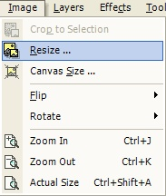

Resize Operation
|
 The Resize Operation (Image -->Resize) changes the size of the image. Selecting Image -->Resize will bring up a window that provides resampling, width specification, height specification, and the option to maintain the aspect ratio. Marking of Maintain Aspect Ratio enforces a proportional resize. Resampling employs one of two algorithms (Bicubic or Nearest Neighbor) for application during the resize operation. |
An image altered by the Resize Operation:
| The Original Image |
| A Bicubic Resize |
|
A Nearest Neighbor Resize |